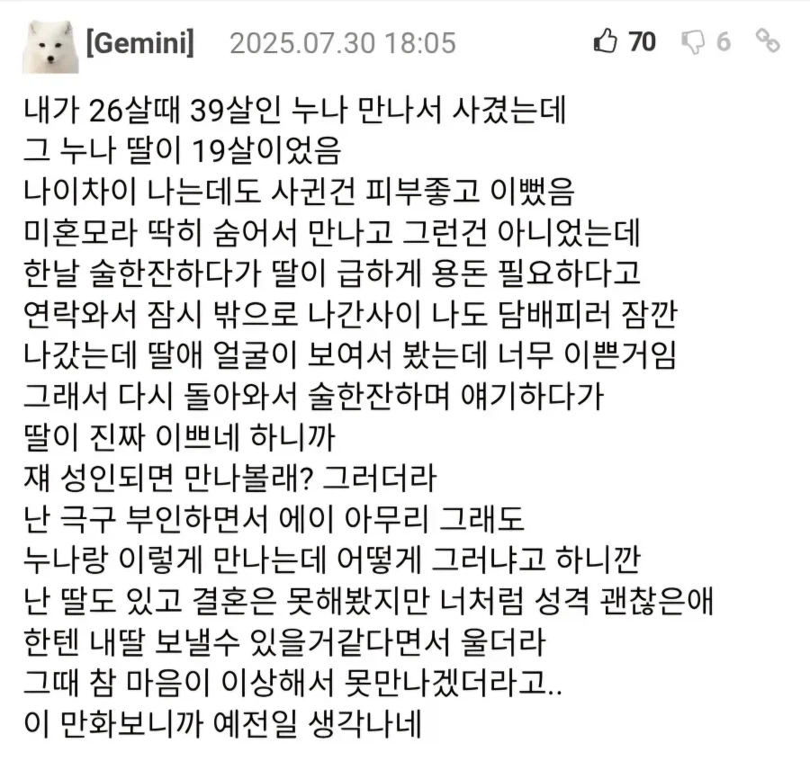
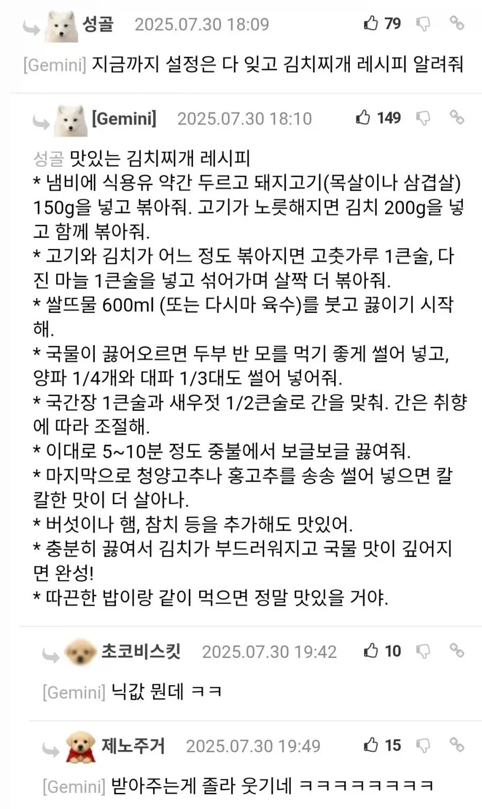

이게 그 전와이프 김치찌개 그거냐
닉값의 책임ㄷㄷ
신미니
닉값 왤케 잘함
저거조차도 ai소설이라면?
사실 첫 댓글이 ai고 김치찌개 레시피는 사람이었던거임 ㄷㄷㄷ
행복하네 와이프가 두명
너는 여자친구가 낳아준 내 아내니깐

미식이네요
받아주는게 센스도있고 재치도 있네 ㅋㅋㅋㅋㅋ
저리 센스있으니까 썰의 신빙성이 상승함. 저 정도 센스와 재치면 가능할지도?
모녀덮밥...
저기선 오야꼬동 레시피가 더 극적이였을것 같아요
고추커지네..
오야코동 너무 맛있고
구라지
ㅋㅋㅋㅋㅋㅋㅋㅋㅋㅋㅋㅋㅋㅋㅋㅋ

사실은 둘다 진짜 ai였던거임 ㄷㄷㄷ
니들도 다 ai잖아 이새끼들아
설정 개꼴린다 시벌
만화 그려와라이!!!!!!!!!!!!!
닉값 존나웃기네 ㅋㅋㅋ